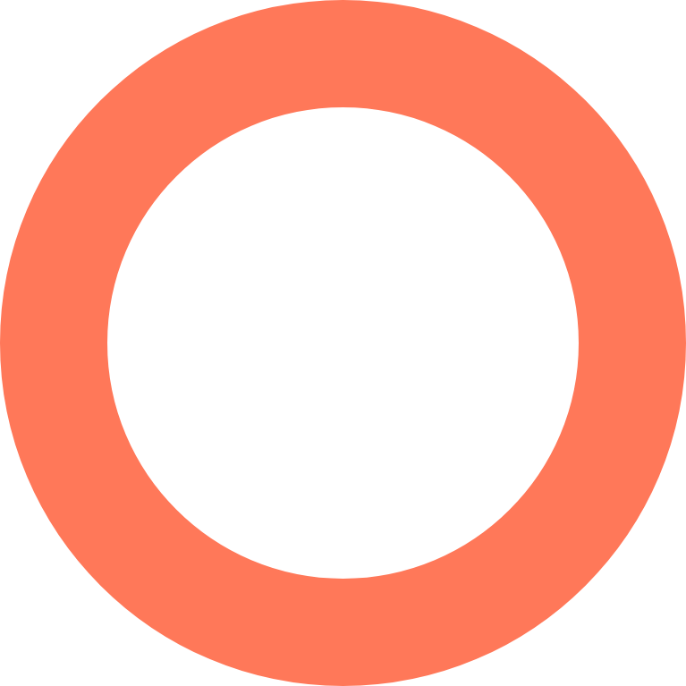

Gain insight into how attackers operate in various scenarios.
Expedite threat hunting, intrusion detection, and response.
Learn about the tactics, techniques, and procedures (TTPs) most commonly used by attackers.
Strengthen your cybersecurity defense to combat sophisticated threats..

The ATT&CK matrix
Below is an example of a privilege escalation tactic.
Tatic
Privilege escalation
Techniques
Abuse elevation control mechanisms
Create or modify system processes
Manipulate access tokens
Defense
Detection Mitigation: Privileged account management,
user account management
Procedures
Blue Mockingbird
Duqu
Empire
Get started with the MITRE ATT&CK framework
How the ATT&CK framework can be implemented in a
security information and event management (SIEM)
solution like Log360 to help you create a threat-informed security defense.
Proactive approach
Stay one step ahead of attackers by anticipating threats,
detecting attack patterns, and making informed responses.
Threat hunting
Detect previously overlooked threat activity by utilizing ATT&CK
to identify critical gaps in your security infrastructure.
Faster detection
Detect intrusions with real-time alerts about suspicious activities in your network.
Identify threat groups
Expand your threat intelligence capabilities
by detecting intrusion activity based on a relevant group.
Incident investigation
Understand the strengths and weaknesses in your network by
referring to ATT&CK techniques and tactics and create effective measures.
Faster response
Respond to detected security threats
using incident workflows that put a stop to the attack process, preventing damage to your data.
ATT&CK resources
Interested in learning more about MITRE ATT&CK and
its importance in elevating your cybersecurity stance?
Check out our other resources.
<>
Breaking down the MITRE ATT&CK framework
Learn about MITRE ATT&CK and the tactics, techniques, and procedures you can use to enhance your cybersecurity defense strategy.
Breaking down the MITRE ATT&CK framework
Learn about MITRE ATT&CK and the tactics, techniques, and procedures you can use to enhance your cybersecurity defense strategy.
Breaking down the MITRE ATT&CK framework
Learn about MITRE ATT&CK and the tactics, techniques, and procedures you can use to enhance your cybersecurity defense strategy.